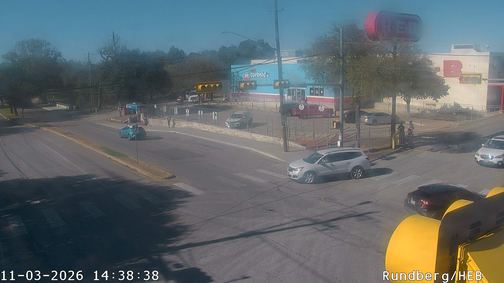
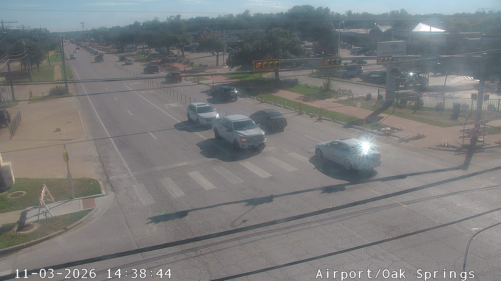
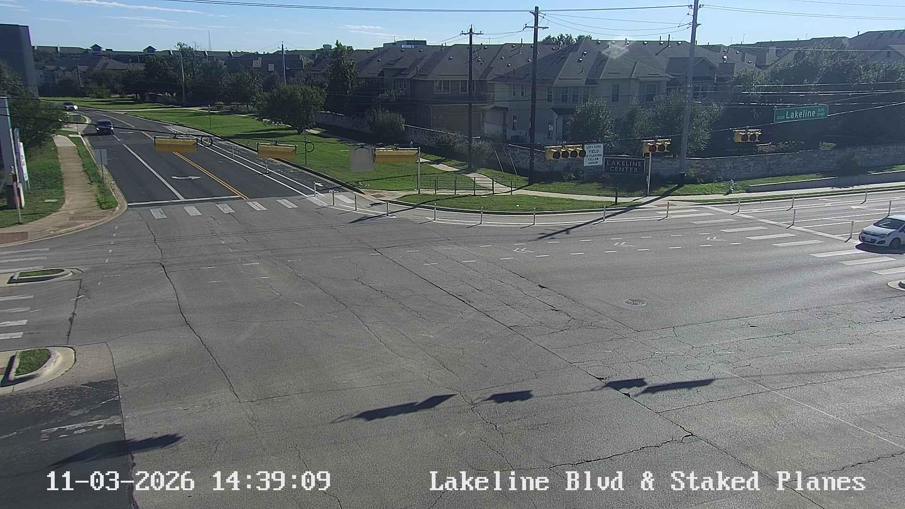
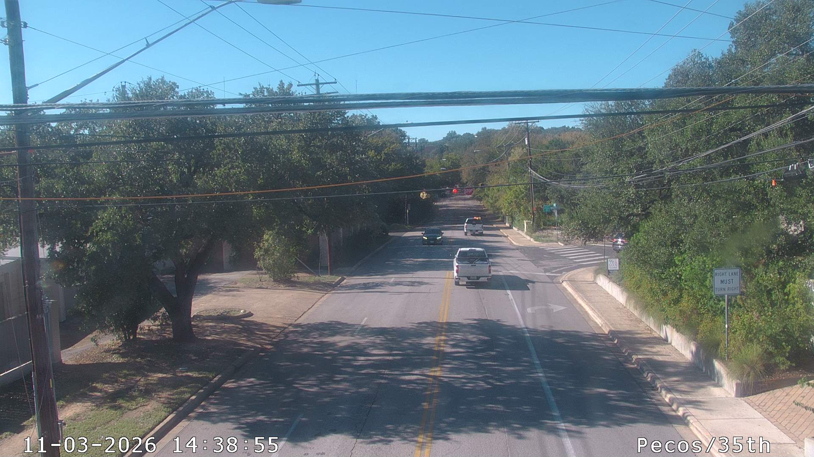
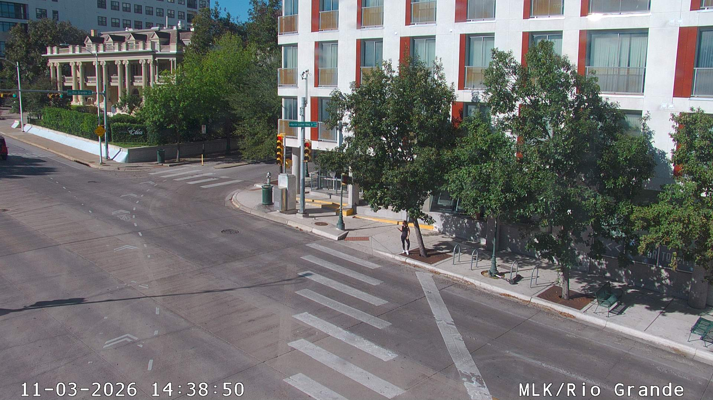

PROJECT CASE STUDY
Traffic Camera Image Extraction
Python workflows to collect TxDOT camera snapshots and extract frames from live video streams.
01Project summaryScope and context
02MethodologyHow I approached the work
For TxDOT roadway cameras, I used Selenium and BeautifulSoup to locate camera names and still-image URLs, then downloaded the snapshots. For Jackson Hole live streams, I used Streamlink to access video segments and OpenCV to decode the clips and save up to three JPEG frames per video. The reorganized script in the public repository now uses FFmpeg for frame extraction, while the original Baylor script preserves the OpenCV workflow.
03FiguresFive camera snapshots
Texas camera snapshot examples
These five snapshots were collected from the City of Austin's public traffic-camera system in November 2026. They demonstrate the still-image acquisition approach used in the Texas camera workflow. They are not archived outputs from the original TxDOT collection or CNN detection results.





PROJECT TAKEAWAYS
Why This Project Matters
Making recurring visual data usable
Practical and scientific value
Automating the collection of roadway-camera snapshots and video frames converts repetitive manual retrieval into a more consistent source of time-indexed visual data. Those images can support subsequent review and analysis without claiming that this extraction pipeline itself performed object detection or predictive modeling.
What it demonstrates as a data scientist
The work strengthened my Python automation, OpenCV and data-acquisition skills, especially around repeatable extraction, file organization and preparing unstructured visual inputs for downstream computer-vision workflows. It illustrates how reliable data collection is often the first step toward more advanced analytics.